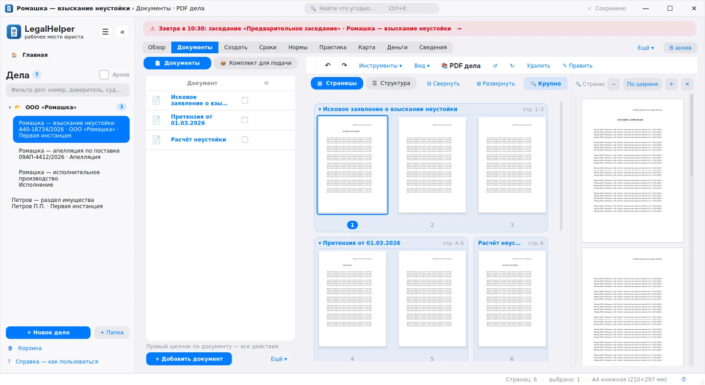
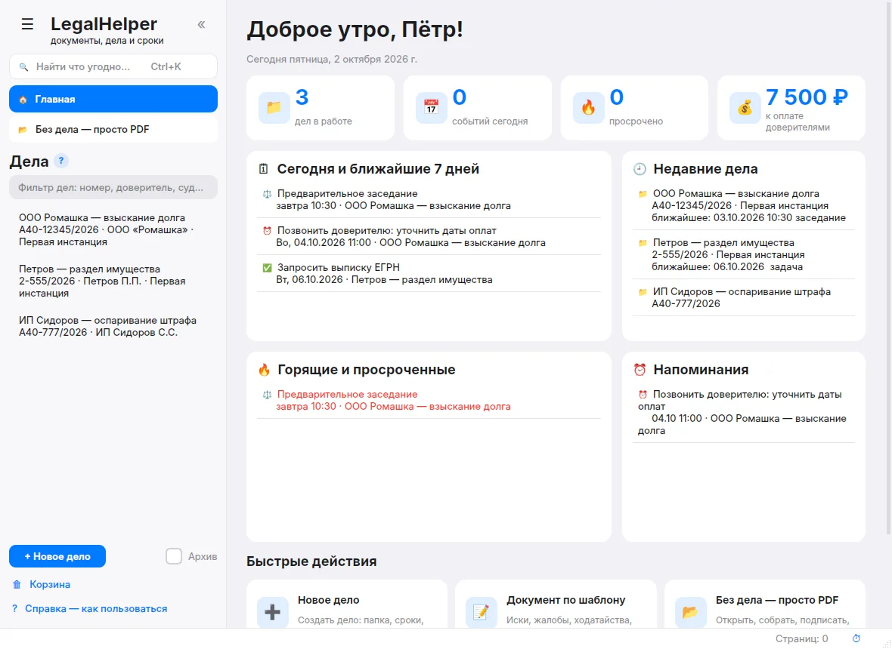
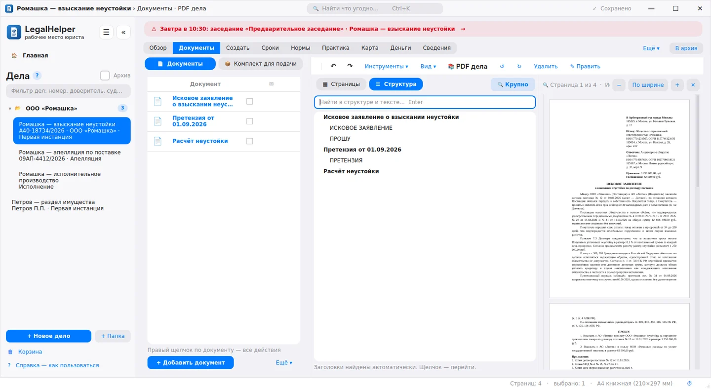
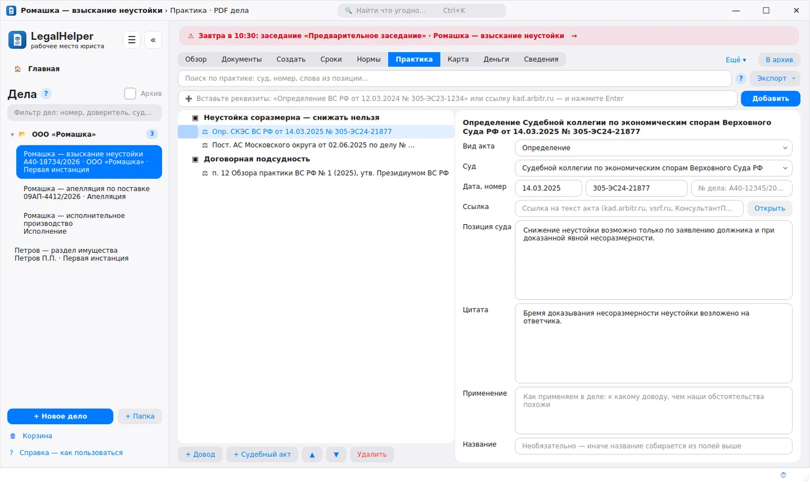
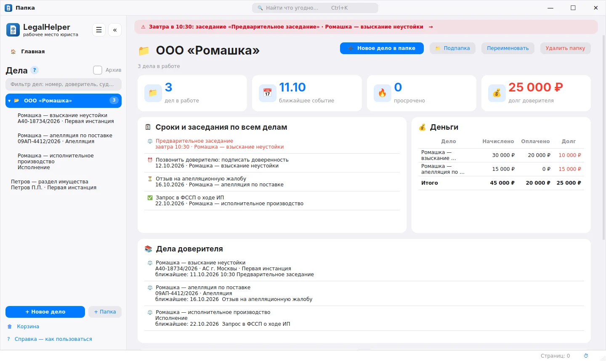
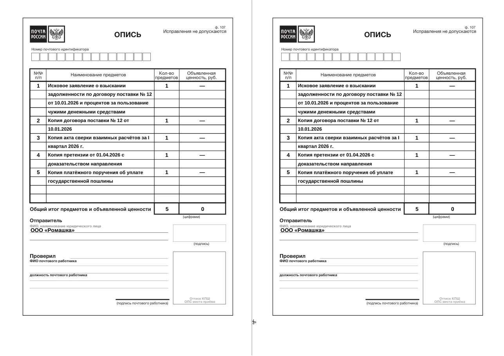
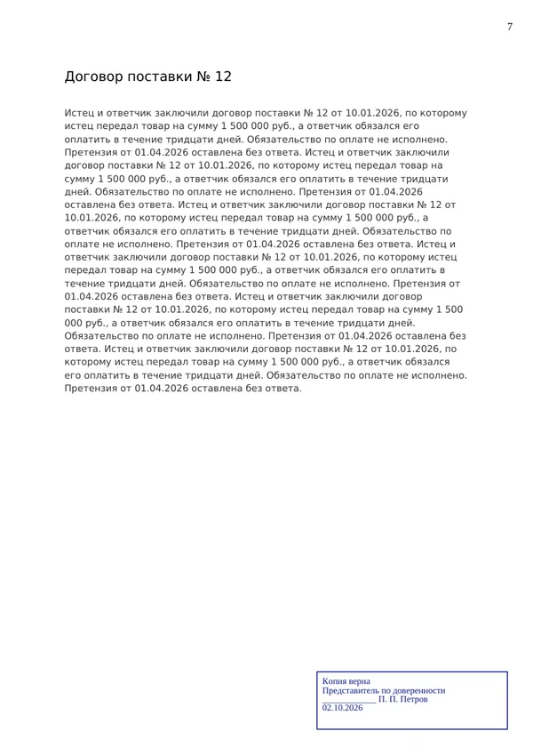
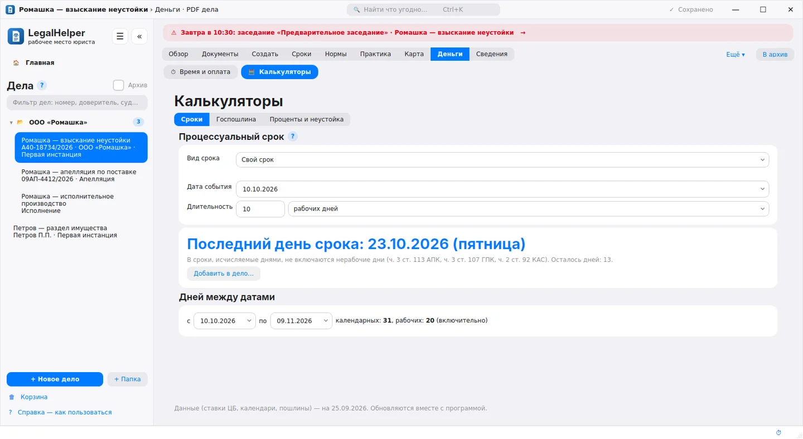
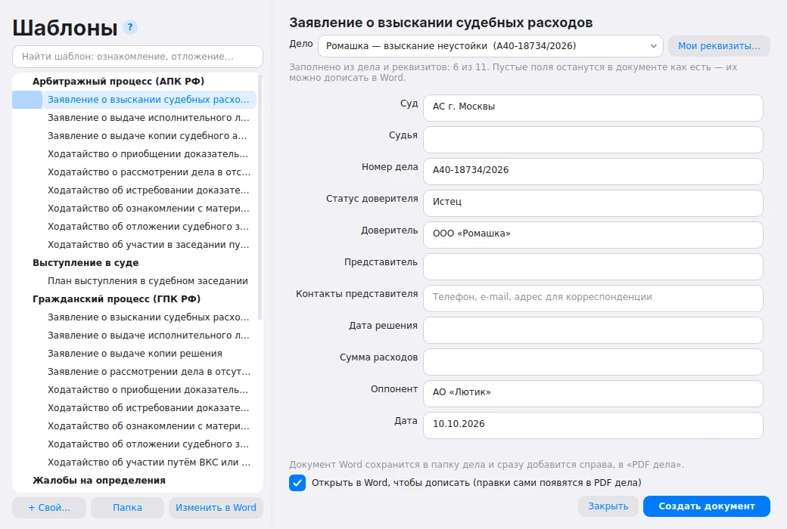
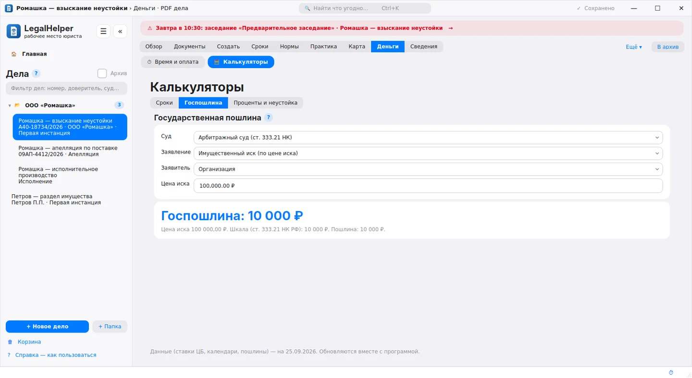

Документы, сроки и судебная практика в одном окне. Освободите время для работы с правом.
Программа устанавливается на компьютер с Windows. Откройте эту страницу на компьютере.
Так это выглядит в программе. Выберите пункт справа — снимок поменяется. Видео работы — в разделе «Примеры из работы».
LegalHelper берёт на себя техническую работу по делу: оформление, подсчёт сроков, расчёты и учёт. Нажмите на пункт — рядом откроется снимок этого раздела программы.
Иск, договор, сканы и фотографии собираются в один PDF по порядку. Нумерация листов и «Копия верна» одной кнопкой. Текст PDF и документы Word правятся прямо в программе.
Опись заполняется на официальном бланке Почты России: длинные наименования переносятся, количество листов считается автоматически.
Срок считается с учётом выходных и праздничных дней. Заседания и задачи с напоминаниями, на Главной видно всё на сегодня.
Вставьте реквизиты акта, и суд, дата и номер заполнятся сами. Акты распределяются по доводам и копируются в иск списком.
Напишите «ст. 395 ГК РФ, ст. 110 АПК РФ», и кодексы со статьями появятся в деле. Программа находит нормы и в документах дела.
Иски, ходатайства, претензии. Суд, номер дела, стороны и суммы подставляются из карточки дела.
Калькуляторы госпошлины и процентов по ст. 395 ГК РФ с таблицей расчёта для приложения к иску.
Дела одного доверителя собираются в папку со сводкой по срокам и оплатам. Учёт часов и платежей, акт выполненных работ.
Описи, нумерация, заверение и расчёты выполняются за минуты вместо часов.
Процессуальные сроки считаются автоматически, о заседаниях программа напоминает заранее.
Каждое дело — одна папка и один PDF. Файлы называются понятно: дата и вид документа.
Нормы права и судебная практика собраны по доводам и переносятся в иск одним списком.
Данные хранятся на вашем компьютере и не передаются третьим лицам. Обезличивание по 152-ФЗ.
Резервная копия базы дел каждый день, корзина на 30 дней, отмена любого удаления.
Программа создана для юристов и адвокатов, которые ведут дела самостоятельно или в небольшой команде. В ней собраны инструменты, которые обычно приходится искать в разных программах: PDF-редактор, калькуляторы, календарь сроков, база практики.
Программа бесплатна, работает без интернета и обновляется автоматически.
Настоящая программа в работе: курсор щёлкает, печатает и переключает вкладки — как вы сами. Видео идут по кругу; нажмите шаг, чтобы перейти к нему.
Нажмите на снимок, чтобы открыть его крупно.










Расчёт примерный: время на ту же работу вручную и в программе.
Три шага и пара минут. Дальше обновления устанавливаются автоматически.